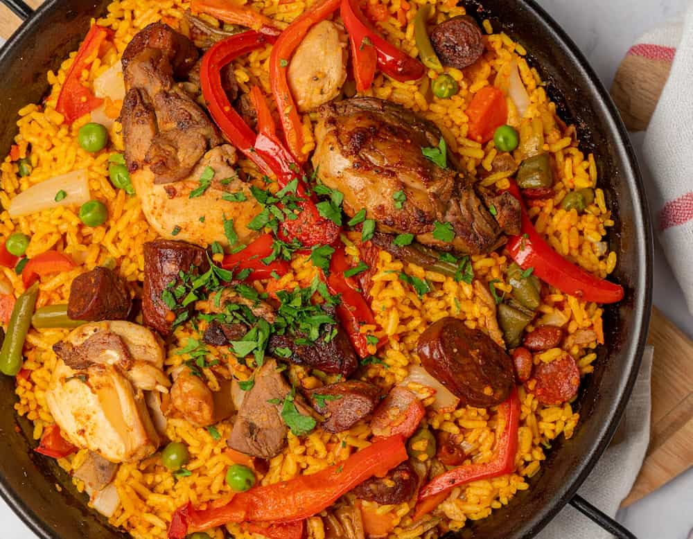

Paella de carne

Ingredientes
- 400g de arroz de grano redondo (tipo bomba o carnoli)
- 500g de pollo troceado (muslos y contramuslos)
- 300g de costillas de cerdo troceadas
- 1 pimiento verde mediano
- 2 tomates maduros
- 1 pimiento rojo grande
- 150g de judias verdes planas (chauchas)
- 100g de garrofón (judión valenciano)
- 4 dientes de ajo
- Unas hebras de azafrán
- 1 cdta. de pimentón dulce
- Aceite de oliva extra virgen
- Sal
- Pimienta
- 1.2 lt de caldo (si es el caldo casero mejor)
- Unas ramitas de romero fresco (opcional)
- Preparación: Antes de empezar, cortar los pimientos en tiras y las judías verdes en trozos. Picar finamente los ajos. Rallar los tomates
- Sellar las carnes: Poner un buen chorro de aceite de oliva en una paellera o sartén grande, a fuego medio-alto. Cuando esté caliente, salpimentar el pollo y las costillas de cerdo y dorar por todos lados hasta que estén bien sellados. Retirar las carnes y reservar.
- Preparar el sofrito: En el mismo aceite, sofreír las tiras de pimiento rojo y verde. Cuando estén tiernos, añadir las judías verdes y el garrofón, si se usa. Cocinar unos minutos y luego añadir el ajo picado. Justo antes de que el ajo se dore, incorporar el tomate rallado y sofreír hasta que el agua se evapore y quede una salsa concentrada.
- Integrar: Incorporar el pimentón dulce, remover rápidamente y volver a poner las carnes en la paellera. Mezclar todo bien para que los sabores se integren.
- El caldo y el azafrán: Verter el caldo caliente en la paellera. Añadir las hebras de azafrán (se pueden tostar ligeramente envueltas en papel de aluminio para potenciar su sabor). Probar y rectificar de sal. Dejar que hierva todo junto durante unos 10 minutos para que se forme un caldo sabroso.
- El momento del arroz: Añadir el arroz repartiéndolo por toda la paellera. Con una espátula, distribuirlo uniformemente por toda la superficie. A partir de este momento, no se debe remover más el arroz.
- La cocción: Cocinar a fuego fuerte durante los primeros 8-10 minutos. Luego, bajar el fuego a medio-bajo y continuar la cocción durante otros 8-10 minutos, o hasta que el arroz haya absorbido casi todo el caldo. Si se quiere, se pueden añadir unas ramitas de romero por encima en los últimos minutos.
- El socarrat (opcional): Cuando quede muy poco caldo, subir el fuego al máximo durante aproximadamente un minuto. Esperar 1 minuto más y retirar del fuego inmediatamente para que no se queme. Esto permite que se forme esa “costra” tan sabrosa y buscada.
- El reposo final: Cubrir la paellera con un paño de cocina limpio o papel de aluminio y dejar reposar durante 5-10 minutos antes de servir. Este paso es fundamental para que el arroz termine de asentarse.